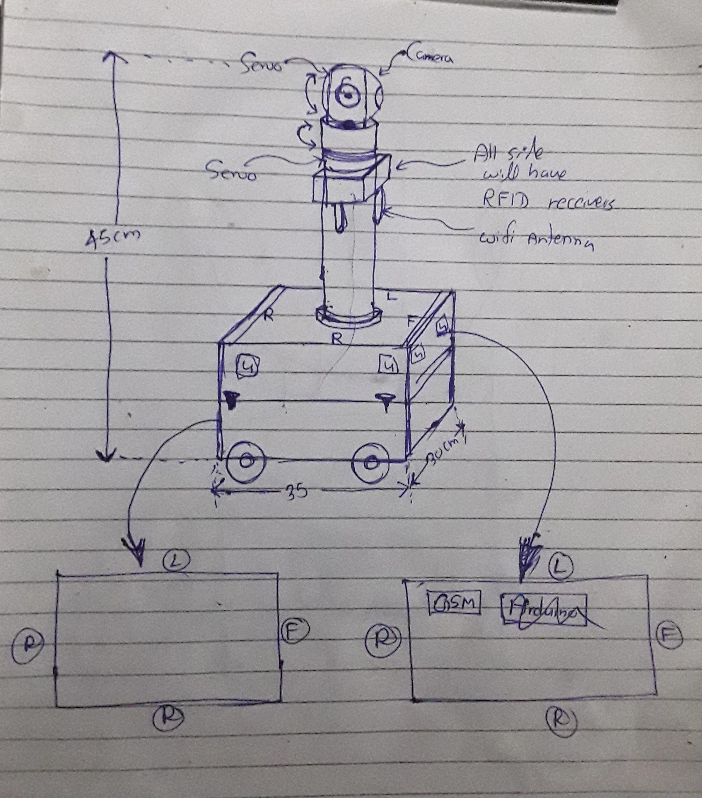

Chapter 3 — Starting with Requirements
With the literature review complete, this week moved to Chapter 3 — design and architecture. The first step was documenting functional and non-functional requirements that would constrain every design decision that followed.
Functional requirements define what the robot must do: fall detection, GSM alerting, person following, medication reminders, obstacle avoidance. Non-functional requirements define the constraints: response time, false positive rate, battery endurance, no Wi-Fi dependency for any safety-critical function.
The constraint that shapes everything: Every safety feature must function without Wi-Fi. This is not a limitation — it is the design intent. CARA is built for homes where internet connectivity is unreliable or absent. GSM is the only communication path for alerts.
The Dual-Controller Decision
The core architecture question was how to distribute the workload. Two fundamentally incompatible types of processing are required simultaneously:
- AI inference — MediaPipe Pose estimation for fall detection requires a Linux environment, GPU acceleration, and a full Python runtime
- Real-time peripheral control — ultrasonic sensor timing requires microsecond precision; a Linux kernel running other tasks cannot guarantee this
A single board cannot handle both reliably. Early tests confirmed this: running inference tasks on a Linux board caused GPIO polling interruptions, producing spurious ultrasonic distance readings at exactly the wrong moments. The solution is a clean split by task type.
| Controller | Responsibilities | Reason for choice |
|---|---|---|
| Jetson Nano Ubuntu · ROS · Python |
MediaPipe fall detection · person following · web interface · camera processing · ROS nodes | GPU for inference, full Linux environment, ROS ecosystem |
| Arduino Bare metal · deterministic |
Ultrasonic sensors · PIR · RFID · GSM · RTC · motors · servos · buzzer · LCD | Microsecond timing, no OS overhead, large digital I/O count |
The two controllers communicate over UART serial using plain ASCII command strings — intentionally simple so there is no protocol stack dependency that could break across updates.
| Direction | Example | Meaning |
|---|---|---|
| Jetson → Arduino | CMD:ALERT | Trigger GSM SMS and buzzer |
| Jetson → Arduino | CMD:MOVE:FWD:150 | Drive forward at PWM 150 |
| Arduino → Jetson | STATE:MONITORING | Current machine state |
| Arduino → Jetson | RFID:UID:A3F2B1 | Card detected, send UID |
System Architecture
The system architecture block diagram maps every hardware component to its controller and shows the information flows between subsystems. The four critical paths are:
- Camera → Jetson → fall event → UART → Arduino → GSM SMS
- PIR motion → Arduino → state change (IDLE → ACTIVE)
- RFID tag → Arduino → UART → Jetson → person lock confirmed
- DS3231 RTC → Arduino → missed dose → GSM SMS reminder
Software Architecture — ROS Node Structure
Seven ROS nodes were defined, each with a single responsibility. Mapping all topics and dependencies before writing code prevents circular dependencies and makes testing each node in isolation straightforward.
| Node | Publishes / Subscribes | Function |
|---|---|---|
camera_node | Pub: /camera/image_raw | USB webcam frame stream |
fall_detection_node | Sub: camera · Pub: /cara/fall_detected | MediaPipe Pose → fall logic |
person_follow_node | Sub: camera · Pub: /cmd_vel | HSV tracking → velocity commands |
serial_bridge_node | Sub: all command topics | ROS topics → UART commands for Arduino |
pan_tilt_node | Sub: face position · via serial bridge | Servo angles for camera head |
web_interface_node | Flask HTTP server | Remote monitor and manual drive UI |
medication_node | Sub: RTC state | Dose schedule management + SMS |
Hardware Architecture — The 5-State Machine
The Arduino firmware is structured as a finite state machine. Every peripheral interaction is scoped to a state — nothing runs outside its context. This makes the firmware predictable and safe.
| State | Active subsystems | Entry condition |
|---|---|---|
| IDLE | PIR sensor polling only | Power-on default, or after RESET |
| ACTIVE | Motors, ultrasonics, camera stream | PIR detects motion |
| MONITORING | All sensors, fall detection running | Person identified via RFID or tracking |
| ALERT | GSM SMS, buzzer — motors locked out | Fall detected by Jetson |
| RESET | Buffer flush, return to IDLE | Alert acknowledged or timeout |
Safety rule baked into the state machine: ALERT locks all motor commands. A robot moving while sending a fall alert is a safety hazard — this is enforced at the firmware level. No software layer can override it.
First Physical Design Sketch
After the architecture documents were complete, the first concept of the physical robot was sketched. The design shows a wheeled chassis with a central camera tower using servo motors for pan and tilt. Dimensions: 45cm camera tower height, 35cm chassis width. RFID receivers are noted on all sides — person identification works from any approach direction.

A second design was also sketched with scaled dimensions and a two-layer ultrasonic sensor approach: upper level for person-distance measurement, lower level for obstacle detection. Separating these two tasks at the sensor level reduces software complexity — person following and obstacle avoidance do not share the same distance data.
Chassis Assembly — The Broken Motor Problem
To see how the sketch would actually look and feel, an off-the-shelf DIY 4WD kit was bought and assembled. The first real problem appeared immediately: the gear motors on the kit were broken. The gear mechanism inside had failed — motors spun but the drive shaft did not turn.
The broken motors were tested with the L298N motor driver anyway to understand the failure mode. Front motors had partial function; rear motors had none. The verdict: replacement motors needed. New motors ordered.
"Expect the unexpected" — noted in the field book at this point. The kit came with motors that appeared intact but were internally broken. Always budget time for component failures, even on new purchases.
What Did Not Go Well
The ROS node dependency map went through three revisions. The first version had cross-dependencies that would have caused timing deadlocks — node A waiting on node B while B waited on A. Drawing the full dependency graph on paper before writing any code caught this early and prevented a class of bugs that are very hard to diagnose once the system is running.
The DIY kit's broken gear motors also meant a two-week wait for replacements started right at the end of this week — picked up in Week 03.
Week 02 Checklist
| Functional and non-functional requirements documented in Chapter 3 | ✓ Complete |
| Dual-controller architecture decided (Jetson Nano + Arduino) | ✓ Complete |
| System architecture block diagram drawn | ✓ Complete |
| Software architecture — 7 ROS nodes, all topics mapped | ✓ Complete |
| Hardware architecture — 5-state machine states and transitions defined | ✓ Complete |
| First physical design sketched (wheeled chassis + camera tower) | ✓ Complete |
| Second design with two-layer navigation concept sketched | ✓ Complete |
| Component procurement list started (BOM draft) | ✓ Complete |
| DIY kit chassis assembled — gear motors found broken, replacements ordered | ✓ Complete |